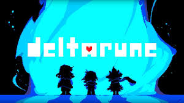

Despues del rotundo exito del juego Undertale en 2015, su creador Toby Fox trabajo arduamente en otro proyecto que tenia como intencion, complacer a los fanaticos de su famoso juego, de ahi salio Deltarune el cual su mismo creador dijo que es una realidad alterna a Undertale, dejando la incognita de si es una secuela directa o no.
Por lo general su creador aprovecha el mes de Octubre para dar a conocer avances del desarrollo de su juego, y hace un tiempo confirmo que su plan es: sacar los capitulos 3 y 4 al mismo tiempo pero con la diferencia de que ahora estos van a ser de paga, ya que los 2 anteriores habian sido gratuitos, lo cúal era de esperarse ya que su primer juego Undertale tambien era de paga.
Desde lo ultimo que dijo en octubre, Toby Fox aseguro que el tercer capitulo ya esta practicamente completo, pero que el cuarto capitulo aunque este avanzado, aun necesita desarrollo.
Tambien dijo que contrato un productor para aligerar las cosas e intentar dar una fecha lo antes posible, pero las posibilidades de ver algo en este 2024 son muy bajas ya que no ha querido anunciar nada relevante.
Ya van casi 2 años desde la salida del capitulo 2 y casi 5 años desde la salida del primer capitulo, pero hay que recalcar que deltarune es un juego que intenta innovar en mecanicas y que en sus 2 primeros capitulos mostro potencial que se puede aprovechar en estos futuros capitulos, por ahora solo queda esperar, W-News estara al tanto de esas novedades e intentara traerlas aqui lo antes posible, les dejamos la pagina oficial de Deltarune por si desean buscar informacion por su cuenta: